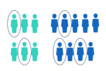
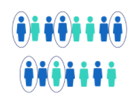
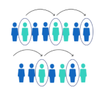
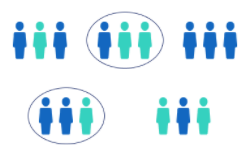

Populations and Generalizability
Chapter 8
Overview
Definitions
- Population: collection of individuals (units) in which we are interested
- Sample: collection of individuals (units) from the population
Goal
Use trends in a sample to make inference about a population.
Notation
| Size | Proportion | Mean | Standard Deviation | |
|---|---|---|---|---|
| Population | N | \(\pi\) | \(\mu\) | \(\sigma\) |
| Sample | n | \(p\) or \(\hat{\pi}\) | \(\bar{x}\) | \(s\) |
Example 1
In a survey of 1,500 parents in the United States, 73% said they wanted to resume in person school for their children for 2021.
What is the population?
- parents in the US
What is the sample?
- 1,500 parents surveyed
What “notation” is used to represent 73%
- \(p\) because 73% is a sample statistic and proportion
Random Sampling and Assignment
Random Sampling: how you draw the observations from the population
- allows for generalizable claims
Random Assignment: how you assign the sample into treatment/control groups
- allows for causal claims.
Example 2

You want to evaluate the effectiveness of the Pfizer vaccine on COVID. You ask for 1,000 volunteers and randomly give half of the volunteers the vaccine and the other half a placebo dose. These people get tested for COVID every week for a year and we record who tests positive for COVID during this time and their symptoms.
What type of conclusions can we draw?
- causal conclusions generalized to the whole population
- causal conclusions only applicable to the sample
- no causal conclusions (correlation only) generalized to the whole population
- no causal conclusions (correlation only) only applicable to the sample
Types of random sampling
- Simple Random: observations are selected randomly from the population, each having an equal chance of being selected.
- Cluster Sampling: first the population is divided into sub-groups, and then x sub-groups out of all groups are randomly selected.
- Stratified Sampling: first the population is divided into sub-groups, and then within each sub-group x observations are randomly selected.
- Systematic Sampling: select some starting point, then every \(k^{th}\) observation of the population is selected.
- 
- 
- 
- 
Example 3

Northwestern University is deciding which undergraduate students to test for COVID this week and due to limited resources they cannot test the entire undergraduate student body at once.
- Population of interest: undergraduate students at NU
The university divides the population into 4 groups {1st year, sophomore, junior, seniors} and randomly selects 200 students from each group to test.
What type of sampling is this?
- simple random
- cluster sampling
- stratified sampling
- systematic sampling
- none of the above
The university alphabetizes the population by last name and selects every \(25^{th}\) student to get tested.
What type of sampling is this?
- simple random
- cluster sampling
- stratified sampling
- systematic sampling
- none of the above
The university alphabetizes the population by last name and selects the first 200 students to get tested.
What type of sampling is this?
- simple random
- cluster sampling
- stratified sampling
- systematic sampling
- none of the above